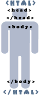

Главная | Оглавление | Словарь

<html>
<head>
<title>Мой первый шаг </title>
</head>
<body>
Здравствуйте, это моя первая страница.
<br>
Добро пожаловать! :)
</body>
</html> (прим.)
Первое, что нам нужно усвоить, что хтмл (html) это то, то мы сейчас изучаем. Второе, что нам нужно усвоить: Html не является языком программирования (прим.), он предназначен для разметки текстовых документов (т.е. для форматирования тескста). То, как будет выглядеть ваш текст, определяют метки (tags или тэг).
Пример тэга: <br> (перенос текста на другую строку, что-то вроде Enter:). Попробуйте между тэгами Body его понатыкать - посмотрите, что получится:)
Т.е. все, что находится между < и > - это тэг. Текст, не находящися между такими скобками < > - весь виден, при просмотре в броузере.
Как мы видим на нашем примере тэгов много и они разные:). Обратите внимание на картинку, она тут не просто так, она показывает нам обязательные тэги.
<html>
Этот тэг должен открывать документ. Если есть открывающий тэг, то должен быть и закрывающий:
</html>
И так всегда по умолчанию. Некоторые тэги, вроде <br>, не требуют закрывающего тэга. Но вернемся к нашему документу и рисунку.